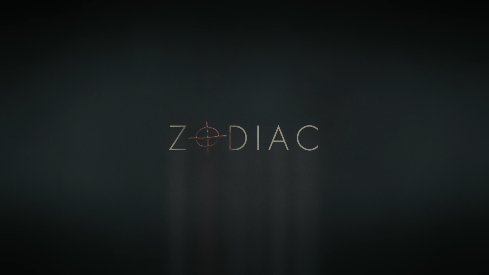
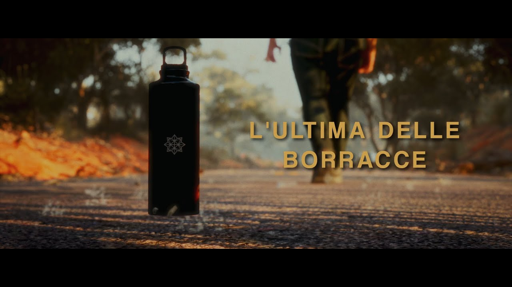
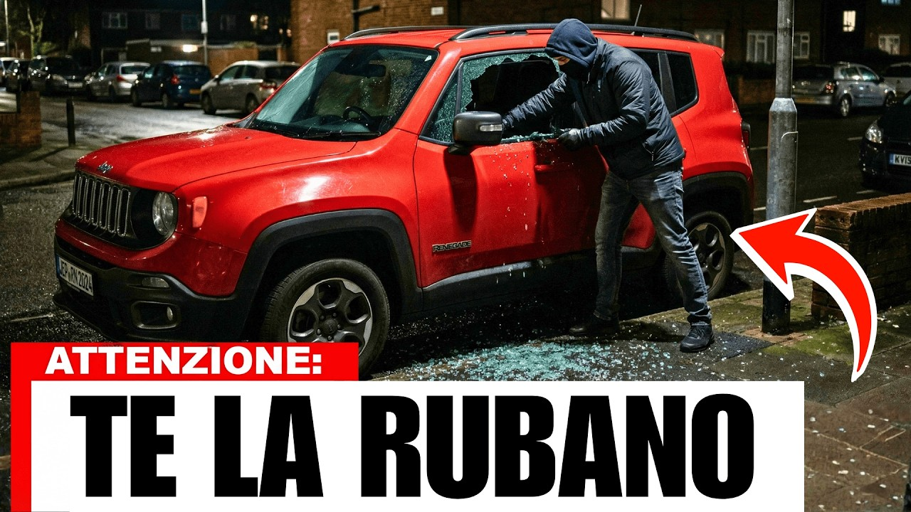
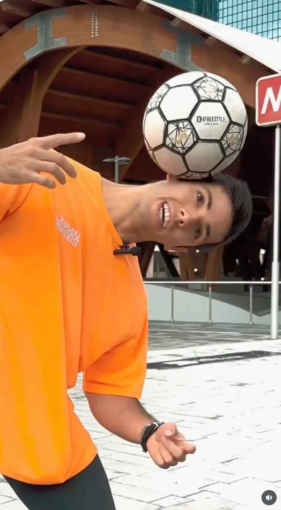

Progetto personaleZodiac
Film & MotionMotion design e 3D
Sono Andrea Borzì, visual artist. Esploro immagini, movimento e spazi digitali attraverso video, 3D, fotografia e interattività.
Esplora i lavori ↓Progetti commerciali, ricerca personale.
Ogni formato, un modo diverso di raccontare.

Progetto personaleMotion design e 3D

Progetto selezionato
CollaborazioneMontaggio, testi, motion graphics, color e animazioni

CollaborazioneMontaggio, testi, motion graphics, color e animazioni
Due collaborazioni in cui seguo testi, montaggio, motion graphics, color e animazioni.
Organizzare le informazioni, costruire la sequenza, dare continuità al racconto. Una serie dedicata al mondo automotive.
Racconti brevi, costruiti per lo schermo verticale. Testo, montaggio e movimento si incontrano nel formato social.
Il progetto decide il linguaggio.
Queste sono le competenze che porto al tavolo.
Video editoriali, contenuti social, trailer. Struttura, ritmo e coerenza visiva, fino alla versione finale.
Tipografia in movimento, animazioni e immagini tridimensionali. Per spiegare un’idea o costruire un’atmosfera.
Serie fotografiche, immagini virtuali ed esperimenti interattivi. Uno spazio per osservare e trovare nuove possibilità.
01 — Ci confrontiamo.
Obiettivo, pubblico, materiali e tempi.
02 — Costruiamo.
Una prima proposta, poi feedback condivisi.
03 — Finalizziamo.
Revisione e consegna nei formati concordati.
Sono un visual artist con base a Catania. Lavoro tra immagini in movimento, 3D, fotografia e interattività: linguaggi diversi con cui dare forma a un’idea.
Nelle collaborazioni editoriali e social mi occupo di testi, montaggio, motion graphics, color e animazioni. La ricerca personale attraversa anche fotografia, realtà aumentata e ambienti digitali. Nel portfolio convivono entrambe le dimensioni.
Raccontami cosa vuoi realizzare,
quali materiali hai e quando ti serve.